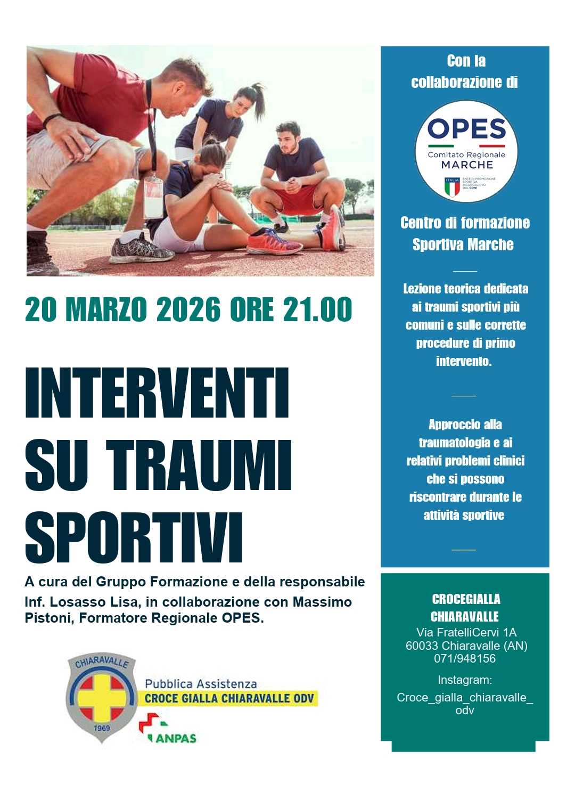
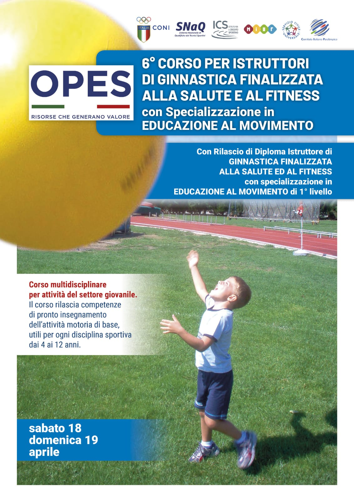
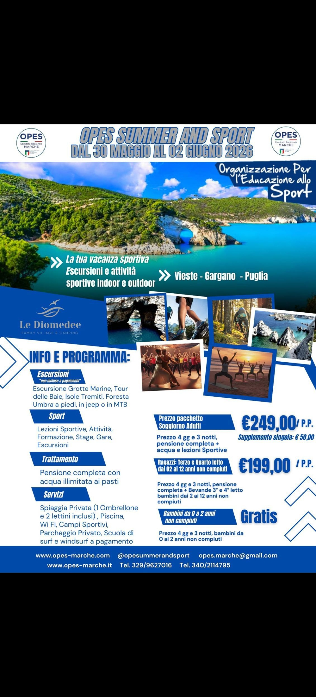

Marche
L'Organizzazione Per l'Educazione allo Sport promuove la cultura sportiva nelle Marche con oltre 30 discipline, centinaia di società affiliate e migliaia di atleti. Sport accessibile a tutti, per costruire benessere fisico e valori umani.
OPES (Organizzazione Per l'Educazione allo Sport) è un Ente di Promozione Sportiva riconosciuto dal CONI che opera sul territorio nazionale e regionale. Il Comitato Regionale Marche coordina e promuove l'attività sportiva in tutta la regione, con l'obiettivo di rendere lo sport accessibile a tutti.
Fondata sui valori dell'inclusione, della solidarietà e della promozione del benessere, OPES Marche supporta centinaia di società sportive nelle province di Ancona, Pesaro-Urbino, Macerata, Ascoli Piceno e Fermo.
Ente ufficiale riconosciuto dal Comitato Olimpico Nazionale
Presenza capillare in tutta la regione Marche
Sport individuali e di squadra per ogni fascia d'età
Programmi dedicati all'integrazione e allo sport per disabili
OPES Marche promuove oltre 30 discipline sportive, dallo sport di base alle competizioni regionali e nazionali.
Tornei regionali, campionati CSI e attività per giovani
Campionati under e senior, minibasket e 3x3
Attività a tutti i livelli, beach volley incluso
Corsi di nuoto, master e gare regionali
Pista e campestre, podismo e maratona
Karate, judo, taekwondo e discipline orientali
Ginnastica, aerobica, danza sportiva
Tennis tavolo, tennis e padel a tutti i livelli

In EvidenzaLezione teorica dedicata ai traumi sportivi più comuni e alle corrette procedure di primo intervento. Con Inf. Losasso Lisa e Massimo Pistoni, Formatore Regionale OPES. Presso Crocegialla Chiaravalle, Via FratelliCervi 1A.
Scopri l'evento
FormazioneDiploma Istruttore con specializzazione Educazione al Movimento 1° livello. Settore giovanile 4-12 anni. Iscrizioni aperte.
Scopri l'evento
Vacanza Sportiva4 giorni di vacanza sportiva a Vieste (Puglia). Escursioni, sport, formazione e gare. Adulti €249/p.p. · Ragazzi €199/p.p. · 0-2 anni gratis.
Scopri l'eventoLezione teorica sui traumi sportivi più comuni e procedure di primo intervento. Con Inf. Losasso Lisa e Massimo Pistoni, Formatore Regionale OPES.
Clinic gratuito sulla velocità nello sport giovanile. Con Massimo Pistoni. Max 18 posti. Iscrizioni entro ore 18:00 a partecipazioneopescorsi@gmail.com
Corso con rilascio Diploma Istruttore con specializzazione Educazione al Movimento 1° livello. Settore giovanile 4-12 anni.
Finali regionali della Fitness Competition 3.2.1. Premi: vacanza sportiva gratuita a Vieste (Gargano), diplomi, gadget e €200 per 1° Cat. Avanzato.
OPES Marche offre supporto completo alle società sportive e agli atleti: dalla gestione amministrativa alla formazione tecnica.
Gestione completa del tesseramento sportivo per atleti, tecnici e dirigenti. Procedure semplici e veloci per la tua società.
ScopriCorsi per istruttori, allenatori e dirigenti sportivi. Aggiornamento continuo in collaborazione con CONI e organismi nazionali.
ScopriAssistenza per l'omologazione degli impianti, redazione statuti ASD/SSD e gestione dei rapporti con le istituzioni sportive.
ScopriOrganizzazione di campionati regionali, tornei e manifestazioni sportive nelle diverse discipline OPES.
ScopriConvenzioni con centri medici per le visite di idoneità sportiva agonistica e non agonistica a tariffe agevolate.
ScopriProgrammi di sport inclusivo, attività per persone con disabilità e iniziative di sport come strumento di integrazione sociale.
ScopriAffiliare la tua società sportiva ad OPES Marche è semplice e conveniente. Accedi ai campionati regionali, ai servizi di formazione, ai vantaggi assicurativi e al riconoscimento CONI. Unisciti a oltre 350 società nelle Marche!
Riconoscimenti & Affiliazioni Istituzionali